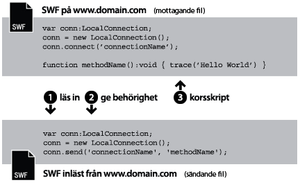
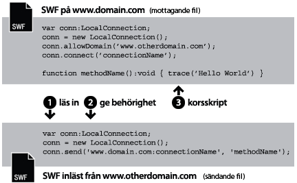
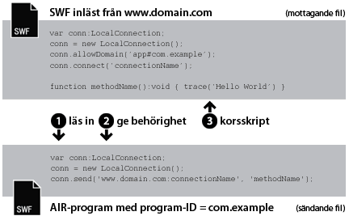
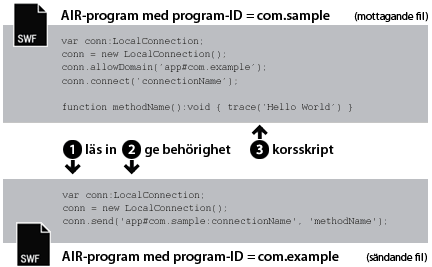

| Paket | flash.net |
| Klass | public class LocalConnection |
| Arv | LocalConnection |
| Språkversion: | ActionScript 3.0 |
| Körningsmiljöversioner: | AIR 1.0, Flash Player 9, Flash Lite 4 |
- Inom en enskild SWF-fil
- Mellan flera SWF-filer
- Mellan innehåll (SWF-baserat eller HTML-baserat) i AIR-program
- Mellan innehåll (SWF-baserat eller HTML-baserat) i ett AIR-program och SWF-innehåll som körs i en webbläsare
Stöd för AIR-profiler: Den här funktionen stöds på alla operativsystem för datorer och enheter med AIR for TV, men inte på mobilenheter. Du kan testa stödet vid körning med egenskapen LocalConnection.isSupported. På sidan om stöd för AIR-profiler hittar du mer information om API-stöd för flera profiler.
Obs! Enheter med AIR for TV har bara stöd för kommunikation mellan SWF-baserat innehåll i AIR-program.
Med lokala anslutningar kan den här typen av kommunikation användas mellan SWF-filer utan fscommand() eller JavaScript. LocalConnection-objekt kan bara kommunicera med andra filer som körs på samma klientdator, men de kan köras i olika program – en fil kan till exempel köras i en webbläsare och en SWF-fil i Adobe AIR.
LocalConnection-objekt som har skapats i ActionScript 3.0 kan kommunicera med LocalConnection-objekt som har skapats i ActionScript 1.0 eller 2.0. Även det omvända gäller: LocalConnection-objekt som har skapats i ActionScript 1.0 eller 2.0 kan kommunicera med LocalConnection-objekt som har skapats i ActionScript 3.0. I Flash Player sker kommunikationen mellan LocalConnection-objekt som har olika versioner automatiskt.
Du kan lägga till återkallningsmetoder till LocalConnection-objekt på något av följande tre sätt:
- Använda underklasser till klassen LocalConnection och lägga till metoder
- Ställa in egenskapen
LocalConnection.clientpå ett objekt som implementerar metoderna - Skapa en dynamisk klass som utökar LocalConnection och bifogar metoder dynamiskt
Det är lättare att förstå hur du ska använda LocalConnection-objekten för kommunikation mellan två filer om du identifierar de kommandon som används i respektive fil. Den ena filen kallas för den mottagande filen och är den fil som innehåller den metod som ska anropas. Den mottagande filen måste innehålla ett LocalConnection-objekt och ett anrop till metoden connect(). Den andra filen kallas den sändande filen och är den fil som anropar metoden. Den sändande filen måste innehålla ett annat LocalConnection-objekt och ett anrop till metoden send().
Hur du använder send() och connect() skiljer sig beroende på om filerna finns i samma domän, i olika domäner med förutsägbara domännamn eller i olika domäner med oförutsägbara eller dynamiska domännamn. I följande stycke förklaras tre olika fall, med ett kodexempel för varje fall.
Samma domän. Det här är det enklaste sättet att använda ett LocalConnection-objekt, att endast tillåta kommunikation mellan LocalConnection-objekt inom samma domän, eftersom kommunikation inom samma domän tillåts som standard. När två filer från samma domän kommunicerar behöver du inte implementera några specifika säkerhetsåtgärder, och du skickar ett enda värde för parametern connectionName till båda metoderna connect() och send():

// receivingLC is in http://www.domain.com/receiving.swf
receivingLC.connect('myConnection');
// sendingLC is in http://www.domain.com/sending.swf
// myMethod() is defined in sending.swf
sendingLC.send('myConnection', 'myMethod');
Olika domäner med förutsägbara domännamn. När två SWF-filer från olika domäner kommunicerar måste du se till att det finns kommunikation mellan de båda domänerna genom att anropa metoden allowDomain(). Du måste även ange det fullständiga anslutningsnamnet i metoden send() med mottagande domännamn för LocalConnection-objektet:

// receivingLC is in http://www.domain.com/receiving.swf
receivingLC.allowDomain('www.anotherdomain.com');
receivingLC.connect('myConnection');
// sendingLC is in http://www.anotherdomain.com/sending.swf
sendingLC.send('www.domain.com:myConnection', 'myMethod');
Olika domäner med oförutsägbara domännamn. Ibland kanske du vill göra filen med mottagande LocalConnection-objekt mer flyttbar mellan domäner. Du kan undvika att ange domännamnet i metoden send(), och endast ange att mottagande och sändande LocalConnection-objekt inte finns i samma domän, genom att skriva ett understreck (_) framför anslutningsnamnet, både i anropet connect() och i anropet send(). För att tillåta kommunikation mellan de båda domänerna anropar du metoden allowDomain() och godkänner domänerna från vilka du vill tillåta LocalConnection-anrop. Alternativt kan du skicka jokerteckenargumentet (*) som tillåter anrop från alla domäner:

// receivingLC is in http://www.domain.com/receiving.swf
receivingLC.allowDomain('*');
receivingLC.connect('_myConnection');
// sendingLC is in http://www.anotherdomain.com/sending.swf
sendingLC.send('_myConnection', 'myMethod');
Från Flash Player till ett AIR-program. I ett LocalConnection-objekt som skapats i programsandlådan i AIR används en speciell sträng som anslutningsprefix i stället för ett domännamn. Den här strängen har följande format: app#appID.pubID där appID är program-ID och pubID är programments utgivar-ID. (Ta med utgivar-ID endast om ett utgivar-ID används i AIR-programmet.) Om till exempel ett AIR-program har program-ID:t "com.example" och inget utgivar-ID kan du använda app#com.example:myConnection som den lokala anslutningssträngen. AIR-programmet måste även anropa metoden allowDomain(), som skickas i den anropande SWF-filens ursprungsdomän:

// receivingLC is an AIR application with app ID = com.example (and no publisher ID)
receivingLC.allowDomain('www.domain.com');
receivingLC.connect('myConnection');
// sendingLC is in http://www.domain.com/sending.swf
sendingLC.send('app#com.example:myConnection', 'myMethod');
Obs! Om ett AIR-program läser in en SWF-fil utanför programsandlådan i AIR, är reglerna för att skapa en lokal anslutning med SWF-filen desamma som reglerna för att skapa en anslutning med en SWF-fil som körs i Flash Player.
Från ett AIR-program till Flash Player. När ett AIR-program kommunicerar med en SWF-fil som körs i Flash Player-körningen, måste du tillåta kommunikation mellan de båda genom att anropa metoden allowDomain() och skicka AIR-programmets anslutningsprefix. Om till exempel ett AIR-program har program-ID:t "com.example" och inget utgivar-ID, kan du skicka strängen app#com.example till metoden allowDomain(). Du måste även ange anslutningsnamnet i metoden send() med det mottagande LocalConnection-objektets domännamn (använd "localhost" som domän för SWF-filer inlästa från det lokala filsystemet):

// receivingLC is in http://www.domain.com/receiving.swf
receivingLC.allowDomain('app#com.example');
receivingLC.connect('myConnection');
// sendingLC is an AIR application with app ID = com.example (and no publisher ID)
sendingLC.send('www.domain.com:myConnection', 'myMethod');
Från ett AIR-program till ett annat AIR-program. Om du vill ha en kommunikation mellan två AIR-program, tillåter du kommunikationen mellan de båda genom att anropa metoden allowDomain() och skicka med det skickande AIR-programmets anslutningsprefix. Om till exempel ett program har program-ID:t "com.example" och inget utgivar-ID, kan du skicka strängen app#com.example till metoden allowDomain() i det mottagande programmet. Du måste även ange det fullständiga anslutningsnamnet i metoden send() med mottagande anslutningsprefix för LocalConnection-objektet:

// receivingLC is an AIR application with app ID = com.sample (and no publisher ID)
receivingLC.allowDomain('app#com.example');
receivingLC.connect('myConnection');
// sendingLC is an AIR application with app ID = com.example (and no publisher ID)
sendingLC.send('app#com.sample:myConnection', 'myMethod');
Du kan använda LocalConnection-objekt för att skicka och ta emot data inom en enstaka fil, men detta är inte den vanliga metoden.
Mer information om metoderna send() och connect() finns i texten om parametern connectionName i posterna LocalConnection.send() och LocalConnection.connect(). Se även posterna allowDomain() och domain.
Relaterade API-element
flash.net.LocalConnection.allowDomain()
flash.net.LocalConnection.domain
 Dölj ärvda publika egenskaper
Dölj ärvda publika egenskaper Visa ärvda publika egenskaper
Visa ärvda publika egenskaper| Egenskap | Definieras med | ||
|---|---|---|---|
| client : Object
Anger objektet som återkopplingsmetoder anropas i. | LocalConnection | ||
 | constructor : Object
En referens till klassobjektet eller konstruktorfunktionen för en given objektinstans. | Object | |
| domain : String [skrivskyddad]
En sträng som betecknar domänen för den aktuella filens placering. | LocalConnection | ||
| isPerUser : Boolean
Anger om LocalConnection-objektet är begränsat till den aktuella användaren (true) eller är tillgängligt globalt för alla användare på datorn (false). | LocalConnection | ||
| isSupported : Boolean [statisk] [skrivskyddad]
Egenskapen isSupported är true om klassen LocalConnection stöds på den aktuella plattformen, och i annat fall är värdet false. | LocalConnection | ||
| Metod | Definieras med | ||
|---|---|---|---|
Skapar ett LocalConnection-objekt. | LocalConnection | ||
| addEventListener(type:String, listener:Function, useCapture:Boolean = false, priority:int = 0, useWeakReference:Boolean = false):void
Registrerar ett händelseavlyssnarobjekt för ett EventDispatcher-objekt så att avlyssnaren får meddelanden om händelser. | EventDispatcher | |
Anger en eller flera domäner som kan skicka LocalConnection-anrop till den här LocalConnection-instansen. | LocalConnection | ||
Anger en eller flera domäner som kan skicka LocalConnection-anrop till det här LocalConnection-objektet. | LocalConnection | ||
Stänger (kopplar från) ett LocalConnection-objekt. | LocalConnection | ||
Förbereder ett LocalConnection-objekt som tar emot kommandon från ett send()-kommando (från det sändande LocalConnection-objektet). | LocalConnection | ||
|
Skickar en händelse till händelseflödet. | EventDispatcher | |
|
Kontrollerar om EventDispatcher-objektet har några avlyssnare registrerade för en viss typ av händelse. | EventDispatcher | |
|
Anger om det finns en egenskap angiven för ett objekt. | Object | |
|
Anger om en instans av klassen Object finns i prototypkedjan för objektet som anges som parameter. | Object | |
|
Anger om den angivna egenskapen finns och är uppräkningsbar. | Object | |
|
Tar bort en avlyssnare från EventDispatcher-objektet. | EventDispatcher | |
Anropar metoden methodName i en anslutning som upprättats med metoden connect(connectionName) (i det mottagande LocalConnection-objektet). | LocalConnection | ||
|
Anger tillgänglighet för en dynamisk egenskap för slingåtgärder. | Object | |
|
Returnerar det här objektets strängrepresentation, formaterad i enlighet med språkspecifika konventioner. | Object | |
|
Returnerar det angivna objektets strängbeteckning. | Object | |
|
Returnerar det angivna objektets primitiva värde. | Object | |
|
Kontrollerar om en händelseavlyssnare är registrerad för det här EventDispatcher-objektet eller något av dess överordnade objekt för den angivna händelsetypen. | EventDispatcher | |
| Händelse | Sammanfattning | Definieras med | ||
|---|---|---|---|---|
| [utsändningshändelse] Skickas när Flash Player eller AIR får operativsystemfokus och blir aktivt. | EventDispatcher | ||
| Skickas om ett undantag inträffar asynkront, d.v.s. från ursprunglig asynkron kod. | LocalConnection | |||
| [utsändningshändelse] Skickas när Flash Player eller AIR förlorar operativsystemfokus och blir inaktivt. | EventDispatcher | ||
| Skickas om ett anrop till LocalConnection.send() försöker skicka data till en annan säkerhetssandlåda. | LocalConnection | |||
| Skickas när ett LocalConnecton-objekt rapporterar status. | LocalConnection | |||
client | egenskap |
client:Object| Språkversion: | ActionScript 3.0 |
| Körningsmiljöversioner: | AIR 1.0, Flash Player 9, Flash Lite 4 |
Anger objektet som återkopplingsmetoder anropas i. Standardobjektet är this för den lokala anslutningen som skapas. Du kan tilldela egenskapen client till ett annat objekt så kommer återkopplingsmetoder att anropas i det objektet.
Implementering
public function get client():Object public function set client(value:Object):voidUtlöser
TypeError — Egenskapen client måste vara angiven som ett icke-nullobjekt.
|
domain | egenskap |
domain:String [skrivskyddad] | Språkversion: | ActionScript 3.0 |
| Körningsmiljöversioner: | AIR 1.0, Flash Player 9, Flash Lite 4 |
En sträng som betecknar domänen för den aktuella filens placering.
I innehåll som körs i säkerhetssandlådan application i Adobe AIR (innehåll som installeras med AIR-programmet) använder körningen strängen app# följt av program-ID för AIR-programmet (definieras i programbeskrivningsfilen) i stället för huvuddomänen. Exempelvis tolkas ett connectionName för ett program med program-ID com.example.air.MyApp connectionName till "app#com.example.air.MyApp:connectionName".
I SWF-filer som har publicerats för Flash Player 9 eller senare är den returnerade strängen den filens exakta domän (gäller även underdomäner). Om filen exempelvis finns på www.adobe.com returneras kommandot "www.adobe.com".
Om den aktuella filen är en lokal fil som finns på klientdatorn där Flash Player körs returneras kommandot "localhost".
Det vanligaste sättet att använda egenskapen är att inkludera det sändande LocalConnection-objektets domännamn som en parameter till den metod du planerar att anropa i det mottagande LocalConnection-objektet eller med LocalConnection.allowDomain() för att ta emot kommandon från en viss domän. Om du bara aktiverar kommunikation mellan LocalConnection-objekt i samma domän behöver du antagligen inte använda den här egenskapen.
Implementering
public function get domain():StringRelaterade API-element
isPerUser | egenskap |
isPerUser:Boolean| Språkversion: | ActionScript 3.0 |
| Körningsmiljöversioner: | Flash Player 10.0.32, AIR 1.5.2 |
Anger om LocalConnection-objektet är begränsat till den aktuella användaren (true) eller är tillgängligt globalt för alla användare på datorn (false). Den här egenskapen påverkar bara innehåll som körs på Mac OS X. På andra plattformar ignoreras den här parametern. Anslutningar på operativsystemen Windows och Linux är alltid per användare.
I Flash Player 10.0.22 och tidigare, samt i AIR 1.5.1 och tidigare, är alla LocalConnection-objekt på Mac OS X tillgängliga globalt. Ange alltid den här egenskapen som true, om du inte behöver bevara kompatibiliteten med tidigare versioner. I framtida versioner kan standardvärdet för den här egenskapen ändras till true.
Standardvärdet är false.
Implementering
public function get isPerUser():Boolean public function set isPerUser(value:Boolean):voidisSupported | egenskap |
isSupported:Boolean [skrivskyddad] | Språkversion: | ActionScript 3.0 |
| Körningsmiljöversioner: | Flash Player 10.1, AIR 2 |
Egenskapen isSupported är true om klassen LocalConnection stöds på den aktuella plattformen, och i annat fall är värdet false.
Implementering
public static function get isSupported():BooleanLocalConnection | () | Konstruktor |
public function LocalConnection()| Språkversion: | ActionScript 3.0 |
| Körningsmiljöversioner: | AIR 1.0, Flash Player 9, Flash Lite 4 |
Skapar ett LocalConnection-objekt. Du kan använda LocalConnection-objekt för att möjliggöra kommunikation mellan olika filer som körs på samma klientdator.
Relaterade API-element
allowDomain | () | metod |
public function allowDomain(... domains):void| Språkversion: | ActionScript 3.0 |
| Körningsmiljöversioner: | AIR 1.0, Flash Player 9, Flash Lite 4 |
Anger en eller flera domäner som kan skicka LocalConnection-anrop till den här LocalConnection-instansen.
Det går inte att använda den här metoden för att ge åtkomst till filer med ett säkert protokoll (HTTPS) från filer med osäkra protokoll. Du måste använda metoden allowInsecureDomain() i stället.
Du kan också använda den här metoden om du vill att en underordnad fil från en annan domän ska kunna göra LocalConnection-anrop till den överordnade filen, utan att behöva identifiera den slutdomän som den underordnade filen kommer från. Detta kan till exempel inträffa när du använder lastbalanseringsdirigeringar eller tredjepartsservrar. I så fall kan du använda url-egenskapen i det LoaderInfo-objekt som används med inläsningen för att hämta den domänen som ska användas med allowDomain()-metoden. Om du t.ex. använder ett Loader-objekt för inläsning av en underordnad fil kan du, när filen har lästs in, kontrollera egenskapen contentLoaderInfo.url för Loader-objektet och tolka domänen utifrån den fullständiga URL-strängen. Om du gör detta måste du vänta tills filen har lästs in eftersom contentLoaderInfo.ur inte får sitt slutliga korrekta värde förrän filen har lästs in helt.
Motsatt situation kan också uppstå: du skapar en underordnad fil som ska ta emot LocalConnection-anrop från den överordnade filen, men den kan inte identifiera vilken domän den överordnade filen finns i. Implementera i så fall den här metoden genom att kontrollera om domänargumentet matchar domänen för egenskapen loaderInfo.url i den inlästa filen. Även här måste du tolka domänen från den fullständiga URL:en i loaderInfo.url. I det här fallet behöver du inte vänta på att den överordnade filen ska läsas in eftersom den är inläst innan den underordnade filen läses in.
Tänk på Flash Players säkerhetsmodell när du använder den här metoden. Som standard är ett LocalConnection-objekt associerat till sandlådan för den fil som skapade det. Korsdomänanrop till LocalConnection-objekt tillåts inte om inte metoden LocalConnection.allowDomain() har anropats. I Adobe AIR begränsas emellertid inte innehåll i säkerhetssandlådan application (innehåll som installeras med AIR-programmet) av de här säkerhetsbegränsningarna.
Mer information om säkerhet finns i avsnittet Security på Flash Player Developer Center.
Obs! Metoden allowDomain() har ändrats från formatet som användes i ActionScript 1.0 och 2.0. I dessa tidigare versioner var allowDomain en återkopplingsmetod som du själv implementerade. I ActionScript 3.0 är allowDomain() en inbyggd metod i LocalConnection som du anropar. I och med den här förändringen fungerar allowDomain() nästan på samma sätt som flash.system.Security.allowDomain().
Parametrar
... domains — En eller flera strängar som namnger domänerna från vilka du vill tillåta LocalConnection-anrop. Den här parametern kan anges på två sätt:
|
Utlöser
ArgumentError — Alla angivna parametrar måste vara icke-nullsträngar.
|
Relaterade API-element
allowInsecureDomain | () | metod |
public function allowInsecureDomain(... domains):void| Språkversion: | ActionScript 3.0 |
| Körningsmiljöversioner: | AIR 1.0, Flash Player 9, Flash Lite 4 |
Anger en eller flera domäner som kan skicka LocalConnection-anrop till det här LocalConnection-objektet.
Metoden allowInsecureDomain() fungerar precis som metoden allowDomain(), förutom att metoden allowInsecureDomain() dessutom tillåter SWF-filer som inte kommer från HTTPS-platser att skicka LocalConnection-anrop till filer som kommer från HTTPS-platser. Skillnaden har endast betydelse om du anropar metoden allowInsecureDomain() från en fil som lästes in via HTTPS. Du måste anropa metoden allowInsecureDomain() även om du överträder en icke-HTTPS/HTTPS-gräns inom samma domän. LocalConnection-anrop tillåts som standard inte från icke-HTTPS-filer till HTTPS-filer, även om de finns inom samma domän.
Anrop av allowInsecureDomain() rekommenderas inte, eftersom det kan påverka säkerheten i HTTPS. När du läser in en fil via HTTPS kan du vara ganska säker på att filen inte manipuleras under leveransen över nätverket. Om du sedan tillåter en icke-HTTPS-fil att göra LocalConnection-anrop till HTTPS-filen så godkänner du anrop från en fil som faktiskt kan ha manipulerats under leveransen. Detta innebär att du måste vara extra försiktig eftersom du inte kan förlita dig på äktheten hos LocalConnection-anrop som görs till HTTPS-filen.
Som standard kan filer som använder protokollet HTTPS endast användas av andra filer som använder protokollet HTTPS. Detta bevarar integriteten i protokollet HTTPS.
Den här metoden bör inte användas för att ersätta standardbeteendet eftersom HTTPS-säkerheten äventyras. Du kanske ändå måste göra det, till exempel om du behöver ge åtkomst till HTTPS-SWF-filer som har publicerats för Flash Player 9 eller senare från HTTP-SWF-filer som har publicerats för Flash Player 6 eller tidigare.
Mer information om säkerhet finns i avsnittet Security på Flash Player Developer Center.
Parametrar
... domains — En eller flera strängar som namnger domänerna från vilka du vill tillåta LocalConnection-anrop. Det finns två sätt att ange den här parametern på:
|
Utlöser
ArgumentError — Alla angivna parametrar måste vara icke-nullsträngar.
|
Relaterade API-element
close | () | metod |
public function close():void| Språkversion: | ActionScript 3.0 |
| Körningsmiljöversioner: | AIR 1.0, Flash Player 9, Flash Lite 4 |
Stänger (kopplar från) ett LocalConnection-objekt. Skicka detta kommando när objektet inte längre ska ta emot kommandon, t.ex. när du vill skicka kommandot connect() och använda samma connectionName-parameter i någon annan SWF-fil.
Utlöser
ArgumentError — LocalConnection-instansen är inte ansluten, så den kan inte stängas.
|
Relaterade API-element
connect | () | metod |
public function connect(connectionName:String):void| Språkversion: | ActionScript 3.0 |
| Körningsmiljöversioner: | AIR 1.0, Flash Player 9, Flash Lite 4 |
Förbereder ett LocalConnection-objekt som tar emot kommandon från ett send()-kommando (från det sändande LocalConnection-objektet). Det objekt som används med metoden connect() kallas mottagande LocalConnection-objekt. Mottagande och sändande objekt måste köras på samma klientdator.
Innan du anropar den här metoden behöver du ange metoderna som ingår i mottagande LocalConnection-objekt, enligt exemplet med klassen LocalConnection.
Som standard tolkas argumentet connectionName till värdet "superdomain:connectionName", där superdomain är huvuddomänen för den fil som innehåller kommandot connect(). Om filen som innehåller det mottagande LocalConnection-objektet till exempel finns på www.someDomain.com tolkas connectionName till "someDomain.com:connectionName". (Om en fil som körs i Flash Player finns på klientdatorn är värdet som tilldelas superdomain "localhost".)
I innehåll som körs i säkerhetssandlådan application i Adobe AIR (innehåll som installeras med AIR-programmet) använder körningen strängen app# följt av program-ID för AIR-programmet (definieras i programbeskrivningsfilen) i stället för huvuddomänen. Exempelvis tolkas ett connectionName för ett program med program-ID com.example.air.MyApp connectionName till "app#com.example.air.MyApp:connectionName".
Som standard låter Flash Player även bara det mottagande LocalConnection-objektet ta emot kommandon från sändande LocalConnection-objekt vilkas anslutningsnamn också tolkas till värdet "superdomain:connectionName". På så sätt underlättar Flash Player kommunikationen mellan filer i samma domän.
Om du bara använder kommunikation mellan filer i samma domän anger du en sträng för connectionName som inte börjar med understreck (_) och som inte anger något domännamn (till exempel "myDomain:connectionName"). Använd samma sträng i metoden connect(connectionName).
Om du använder kommunikation mellan filer i olika domäner blir filen med det mottagande LocalConnection-objektet mer flyttbar mellan domäner om du anger en sträng för connectionName som börjar med understreck (_). Det här är de två möjliga fallen:
- Om strängen för
connectionNameinte börjar med ett understreck (_) läggs ett prefix till med huvuddomänen och ett kolon (till exempel"myDomain:connectionName"). Detta förhindrar att konflikter uppstår mellan anslutningen och andra anslutningar med samma namn från andra domäner, men alla sändande LocalConnection-objekt måste ange den här huvuddomänen (till exempel"myDomain:connectionName"). Om filen med det mottagande LocalConnection-objektet flyttas till en annan domän ändrar spelaren prefixet så att det motsvarar den nya huvuddomänen (till exempel"anotherDomain:connectionName"). Alla sändande LocalConnection-objekt måste redigeras manuellt så att de pekar på den nya huvuddomänen. - Om strängen för
connectionNamebörjar med ett understreck (till exempel"_connectionName") läggs inget prefix till i strängen. Det innebär att de mottagande och sändande LocalConnection-objekten använder identiska strängar förconnectionName. OmallowDomain()används för att ange att anslutningar för alla domäner tillåts i det mottagande objektet, kan filen med det mottagande LocalConnection-objektet flyttas till en annan domän utan att några sändande LocalConnection-objekt ändras.
Mer information finns i klassöversikten och i beskrivningen för connectionName i send() och posterna allowDomain() och domain.
Obs! Kolon används som specialtecken för att skilja huvuddomänen från strängen connectionName. Strängen för connectionName får inte innehålla kolon.
Tänk på Flash Players säkerhetsmodell när du använder den här metoden. Som standard är ett LocalConnection-objekt associerat till sandlådan för den fil som skapade det. Korsdomänanrop till LocalConnection-objekt tillåts inte om inte metoden LocalConnection.allowDomain() har anropats. Du kan förhindra att metoden används av en fil genom att ange parametern allowNetworking i object- och embed-taggarna på den HTML-sida där SWF-innehållet finns. I Adobe AIR begränsas emellertid inte innehåll i säkerhetssandlådan application (innehåll som installeras med AIR-programmet) av de här säkerhetsbegränsningarna.
Mer information om säkerhet finns i avsnittet Security på Flash Player Developer Center.
Parametrar
connectionName:String — En sträng som motsvarar det anslutningsnamn som finns angivet i kommandot send() och som ska kommunicera med mottagande LocalConnection-objekt.
|
Utlöser
TypeError — Värdet som skickas till parametern connectionName får inte vara null.
| |
ArgumentError — Detta fel kan ha något av följande tre orsaker: 1) Strängvärdet som skickades till parametern connectionName var null. Skicka ett icke-nullvärde. 2) Värdet som skickades till parametern connectionName innehöll ett kolon (:). Kolon används som specialtecken för att avgränsa huvuddomänen från strängen connectionName i metoden send(), men inte i metoden connect(). 3) LocalConnection-instansen är redan ansluten.
|
Relaterade API-element
send | () | metod |
public function send(connectionName:String, methodName:String, ... arguments):void| Språkversion: | ActionScript 3.0 |
| Körningsmiljöversioner: | AIR 1.0, Flash Player 9, Flash Lite 4 |
Anropar metoden methodName i en anslutning som upprättats med metoden connect(connectionName) (i det mottagande LocalConnection-objektet). Det objekt som används med metoden send() kallas sändande LocalConnection-objekt. SWF-filer som innehåller mottagande och sändande objekt måste köras på samma klientdator.
Data som skickas som parametrar för det här kommandot får inte vara större än 40 kB. Om send() genererar ArgumentError, trots att syntaxen är korrekt, kan du försöka med att dela upp begäranden med send() till flera kommandon som alla är mindre än 40 kB.
Precis som i beskrivningen av posten connect() läggs den aktuella huvuddomänen till connectionName som standard. Om du tillämpar kommunikation mellan olika domäner måste du definiera connectionName i både de sändande och de mottagande LocalConnection-objekten på ett sådant sätt att den aktuella huvuddomänen inte läggs till connectionName. Du kan göra detta på följande två sätt:
- Använd ett understreck (_) i början av
connectionNamei både sändande och mottagande LocalConnection-objekt. I den fil som innehåller det mottagande objektet använder duLocalConnection.allowDomain()för att ange att anslutningar tillåts från alla domäner. Detta gör att du kan spara sändande och mottagande filer i vilken domän som helst. - Ta med huvuddomänen i
connectionNamei det sändande LocalConnection-objektet, till exempelmyDomain.com:myConnectionName. AnvändLocalConnection.allowDomain()i det mottagande objektet för att ange att anslutningar från den angivna huvuddomänen ska tas emot (i det här fallet myDomain.com) eller att anslutningar från alla domäner ska tas emot.
Obs! Det går inte att ange en huvuddomän i connectionName i det mottagande LocalConnection-objektet. Det kan du bara göra i det sändande LocalConnection-objektet.
Tänk på Flash Players säkerhetsmodell när du använder den här metoden. Som standard är ett LocalConnection-objekt associerat till sandlådan för den fil som skapade det. Korsdomänanrop till LocalConnection-objekt tillåts inte om inte metoden LocalConnection.allowDomain() har anropats. Du kan förhindra att den här metoden används av en fil för SWF-innehåll som körs i webbläsaren genom att ange parametern allowNetworking för object- och embed-taggarna på HTML-sidan med SWF-innehållet. I Adobe AIR begränsas emellertid inte innehåll i säkerhetssandlådan application (innehåll som installeras med AIR-programmet) av de här säkerhetsbegränsningarna.
Mer information om säkerhet finns i avsnittet Security på Flash Player Developer Center.
Parametrar
connectionName:String — Motsvarar angivet anslutningsnamn i kommandot connect() som försöker kommunicera med sändande LocalConnection-objekt.
| |
methodName:String — Namnet på den metod som ska anropas i det mottagande LocalConnection-objektet. Följande metodnamn gör att kommandot misslyckas: send, connect, close, allowDomain, allowInsecureDomain, client och domain.
| |
... arguments — Ytterligare valfria argument som ska skickas till den angivna metoden.
|
Händelser
securityError: — LocalConnection.send() försökte kommunicera med en SWF-fil från en säkerhetssandlåda som anropande kod inte har tillgång till. Du kan undvika problemet via implementering av LocalConnection.allowDomain() hos mottagaren.
| |
status: — Om värdet på egenskapen level är "status" lyckades anropet, men om värdet är "error" misslyckades det. Anropet kan misslyckas om mottagande SWF-fil inte godkänner anslutningen.
|
Utlöser
TypeError — Värdet för antingen connectionName eller methodName är null. Skicka icke-nullvärden för dessa parametrar.
| |
ArgumentError — Detta fel kan bero på något av följande: 1) Värdet för antingen connectionName eller methodName är en tom sträng. Skicka giltiga strängar för dessa parametrar. 2) Metoden som angavs i methodName är begränsad. 3) Det serialiserade meddelandet som skickas är för stort (större än 40 kB).
|
Relaterade API-element
asyncError | Händelse |
flash.events.AsyncErrorEventegenskap AsyncErrorEvent.type =
flash.events.AsyncErrorEvent.ASYNC_ERROR| Språkversion: | ActionScript 3.0 |
| Körningsmiljöversioner: | AIR 1.0, Flash Player 9, Flash Lite 4 |
Skickas om ett undantag inträffar asynkront, d.v.s. från ursprunglig asynkron kod.
KonstantenAsyncErrorEvent.ASYNC_ERROR definierar värdet för ett asyncError-händelseobjekts type-egenskap.
Den här händelsen har följande egenskaper:
| Egenskap | Värde |
|---|---|
bubbles | false |
cancelable | false; det finns inget standardbeteende att avbryta. |
currentTarget | Det objekt som aktivt behandlar Event-objektet med en händelseavlyssnare. |
target | Objektet som skickade händelsen. |
error | Felet som utlöste händelsen. |
securityError | Händelse |
flash.events.SecurityErrorEventegenskap SecurityErrorEvent.type =
flash.events.SecurityErrorEvent.SECURITY_ERROR| Språkversion: | ActionScript 3.0 |
| Körningsmiljöversioner: | AIR 1.0, Flash Player 9, Flash Lite 4 |
Skickas om ett anrop till LocalConnection.send() försöker skicka data till en annan säkerhetssandlåda.
SecurityErrorEvent.SECURITY_ERROR definierar värdet för ett securityError-händelseobjekts type-egenskap.
Den här händelsen har följande egenskaper:
| Egenskap | Värde |
|---|---|
bubbles | false |
cancelable | false; det finns inget standardbeteende att avbryta. |
currentTarget | Det objekt som aktivt behandlar Event-objektet med en händelseavlyssnare. |
target | Nätverksobjektet rapporterar säkerhetsfelet. |
text | Text som visas som felmeddelande. |
Relaterade API-element
status | Händelse |
flash.events.StatusEventegenskap StatusEvent.type =
flash.events.StatusEvent.STATUS| Språkversion: | ActionScript 3.0 |
| Körningsmiljöversioner: | AIR 1.0, Flash Player 9, Flash Lite 4 |
Skickas när ett LocalConnecton-objekt rapporterar status. Om LocalConnection.send() slutförs får egenskapen level värdet "status" för händelseobjektet status. Om anropet misslyckas får egenskapen level värdet "error". Om den mottagande filen inte godkänner anslutningen kan anropet misslyckas utan avisering till den sändande filen.
status-händelseobjekts type-egenskap.
Den här händelsen har följande egenskaper:
| Egenskap | Värde |
|---|---|
bubbles | false |
cancelable | false; det finns inget standardbeteende att avbryta. |
kod | En beskrivning av objektets status. |
currentTarget | Det objekt som aktivt behandlar Event-objektet med en händelseavlyssnare. |
nivå | Meddelandets kategori, till exempel "status", "warning" eller "error". |
target | Objektet rapporterar status. |
Relaterade API-element
En LocalConnection-instans skapas i SWF-filen LocalConnectionSenderExample. När knappen klickas används metoden call() för att anropa metoden lcHandler i SWF-filen med anslutningsnamnet "myConnection" så att innehållet i TextField skickas som en parameter.
En LocalConnection-instans skapas i SWF-filen LocalConnectionReceiverExample. Metoden connect() anropas för att den här SWF-filen ska anges som mottagare av meddelanden som skickas till anslutningen "myConnection". Dessutom innehåller den här klassen en publik metod som heter lcHandler(). Detta är metoden som anropas av SWF-filen LocalConnectionSenderExample. När den anropas så läggs texten som skickades som en parameter till TextField på scenen.
Obs! För att testa exempelkoden måste båda SWF-filerna läsas in samtidigt på samma dator.
// Code in LocalConnectionSenderExample.as
package {
import flash.display.Sprite;
import flash.events.MouseEvent;
import flash.net.LocalConnection;
import flash.text.TextField;
import flash.text.TextFieldType;
import flash.events.StatusEvent;
import flash.text.TextFieldAutoSize;
public class LocalConnectionSenderExample extends Sprite {
private var conn:LocalConnection;
// UI elements
private var messageLabel:TextField;
private var message:TextField;
private var sendBtn:Sprite;
public function LocalConnectionSenderExample() {
buildUI();
sendBtn.addEventListener(MouseEvent.CLICK, sendMessage);
conn = new LocalConnection();
conn.addEventListener(StatusEvent.STATUS, onStatus);
}
private function sendMessage(event:MouseEvent):void {
conn.send("myConnection", "lcHandler", message.text);
}
private function onStatus(event:StatusEvent):void {
switch (event.level) {
case "status":
trace("LocalConnection.send() succeeded");
break;
case "error":
trace("LocalConnection.send() failed");
break;
}
}
private function buildUI():void {
const hPadding:uint = 5;
// messageLabel
messageLabel = new TextField();
messageLabel.x = 10;
messageLabel.y = 10;
messageLabel.text = "Text to send:";
messageLabel.autoSize = TextFieldAutoSize.LEFT;
addChild(messageLabel);
// message
message = new TextField();
message.x = messageLabel.x + messageLabel.width + hPadding;
message.y = 10;
message.width = 120;
message.height = 20;
message.background = true;
message.border = true;
message.type = TextFieldType.INPUT;
addChild(message);
// sendBtn
sendBtn = new Sprite();
sendBtn.x = message.x + message.width + hPadding;
sendBtn.y = 10;
var sendLbl:TextField = new TextField();
sendLbl.x = 1 + hPadding;
sendLbl.y = 1;
sendLbl.selectable = false;
sendLbl.autoSize = TextFieldAutoSize.LEFT;
sendLbl.text = "Send";
sendBtn.addChild(sendLbl);
sendBtn.graphics.lineStyle(1);
sendBtn.graphics.beginFill(0xcccccc);
sendBtn.graphics.drawRoundRect(0, 0, (sendLbl.width + 2 + hPadding + hPadding), (sendLbl.height + 2), 5, 5);
sendBtn.graphics.endFill();
addChild(sendBtn);
}
}
}
// Code in LocalConnectionReceiverExample.as
package {
import flash.display.Sprite;
import flash.net.LocalConnection;
import flash.text.TextField;
public class LocalConnectionReceiverExample extends Sprite {
private var conn:LocalConnection;
private var output:TextField;
public function LocalConnectionReceiverExample() {
buildUI();
conn = new LocalConnection();
conn.client = this;
try {
conn.connect("myConnection");
} catch (error:ArgumentError) {
trace("Can't connect...the connection name is already being used by another SWF");
}
}
public function lcHandler(msg:String):void {
output.appendText(msg + "\n");
}
private function buildUI():void {
output = new TextField();
output.background = true;
output.border = true;
output.wordWrap = true;
addChild(output);
}
}
}
Tue Jun 12 2018, 01:40 PM Z